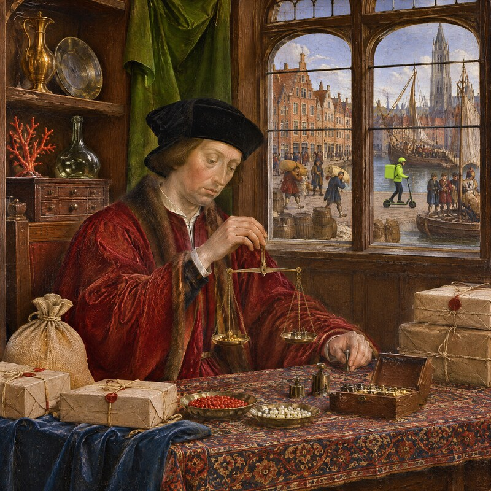

NashFind the Nash · Week 1Concept
A 15th century counting house. A merchant weighs every parcel by hand, and the quay outside never stops moving. Somewhere in this painting, Nash is already at work. Can you find it?

Tap where you think it is
Nash on social
A draft of chapter 19 for the toolkit: channels, pillars, formats, color, voice, rhythm and what to measure. Everything maps back to a chapter that already exists.
Channels and their job
Buyers, operators and partners. Thought leadership, customer proof, the Living Archive, product moments. Company page plus leaders' posts.
Product news, launches and the Jolt. Short, sharp, often a single state change on screen.
Culture: living paintings, events, apparel and the people behind the work. Where the brand's materiality earns attention.
Five content pillars
The Living Archive
Logistics has always existed. One classical scene a week, one chartreuse Nash element, often in motion.
World in Motion
Customer locations in long exposure. The Nash moment stays sharp. Logo as a vibe stamp, bottom right, read last.
The Jolt
Product moments: one state change per post, resolved with the 550 ms Jolt and the Agent UI components.
Operators
A well informed friend talking to one person. The hard parts of logistics, explained simply, with real operators.
Made Real
Apparel, booths, objects. Proof that the brand exists off screen, the opposite of generic AI content.
Formats
Color on social
Captions in the Nash voice
A week of Nash
Living Archive
Painting plus a short story caption. LinkedIn, Instagram.
Operators
One lesson from a real operator. LinkedIn, leaders' posts.
World in Motion
Customer location photo. LinkedIn, Instagram.
The Jolt
One product state change. X, LinkedIn.
Find the Nash
The weekly game. All channels. Monthly: one living painting.
What I would measure